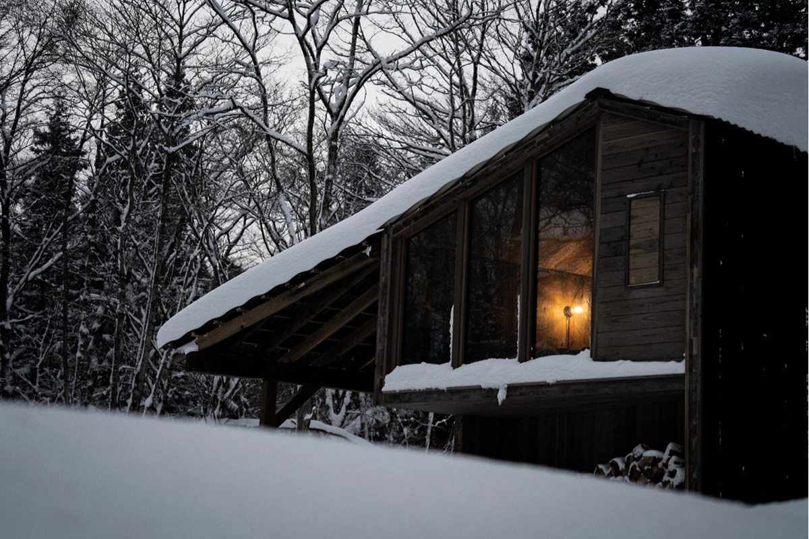
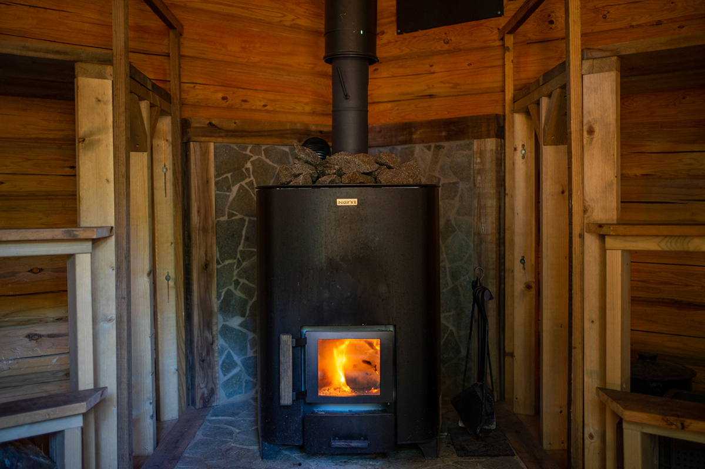

Префектура Нагано · Синано · сауна
The Sauna у озера Нодзири: финская парная в лесах Нагано

Ради хорошей сауны любители готовы ехать куда угодно, и в Японии такие поездки даже получили своё название, «са-таби». У озера Нодзири на севере Нагано их ждёт парная, где всё устроено почти как в Финляндии.
Сауна
Лесная парная, которая растёт вместе с краем
Сауна в Японии стала не только удовольствием: хорошая парная привлекает гостей в глубинку и помогает оживить целый край, а лучшие парные дают почувствовать природу и характер места, где стоят.
The Sauna при комплексе LAMP в городке Синано на севере Нагано одной из первых в стране стала строить парные под открытым небом с опорой на местную воду и пейзажи. Здесь не останавливаются на достигнутом: в 2023 году к прежним парным добавились ещё две.
Viisi: пятиугольный сруб
Пятый домик комплекса, Viisi, сложен из брёвен в необычной форме пятиугольника. Конструкция сделана по финскому образцу, и всё подчинено удобству: температура и движение пара выверены так, чтобы в парной было хорошо сидеть. Скамьи стоят дугой, а у входа гостей ждёт изящная купель с холодной водой, сделанная по образу природного родника.

Earthboat: сауна, которую топишь сам
Вторая новинка 2023 года, Earthboat, это домик-трейлер для ночёвки с собственной сауной. Гости сами разжигают огонь для сауны. Домик проектировали так, чтобы он как можно меньше вредил окружающей природе.
Цифры
В парной помещаются до 6 человек. Сауна финского типа, температура от 80 до 100 °C, вода в холодной купели от 2 до 15 °C. Есть ванна в помещении, отдыхать можно и на свежем воздухе, а ещё здесь есть ресторан. Условия зависят от того, какую из парных вы выберете.
LAMP, озеро Нодзири (The Sauna)
- Адрес
- префектура Нагано, уезд Камиминоти, Синано, Нодзири, 379-2
- Телефон
- +81 26-258-2978
- Часы работы
- сауна 8:30–22:00 (последний вход в 20:30)
- Выходные
- вторник
- Цены / Вход
- ночь с ужином и завтраком от 12 000 иен (с налогом и сервисным сбором), сауна без ночёвки 3500–6000 иен